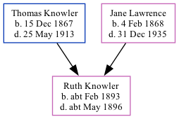

Ruth Adelaide Knowler cFeb 1893 - c1896
[ Home ] | [ Calendar ] | [ Surnames Index ] | [ Family History ]The child of Thomas Knowler (an agricultural laborer) and Jane Lawrence, Ruth Knowler, the first cousin twice-removed on the mother's side of Nigel Horne, was born in Thanet, Kent, England c. Feb 18931,2,3,4,5 and baptized in St Lawrence, Thanet, Kent, England on Apr 18, 1893.
She died c. May 1896 in Eastry, Kent, England2,4 and was buried at St James's Church, Staple, Kent on Apr 17, 18966.
Parents
- Thomas William was born on Dec 15, 1867
- Jane was born on Feb 4, 1868
Citations
- England & Wales births 1837-2006 - Findmypast
- England & Wales deaths 1837-2007 - Findmypast
- England & Wales, FreeBMD Birth Index, 1837-1915 Online publication - Provo, UT, USA: The Generations Network, Inc., 2006.Original data - General Register Office. England and Wales Civil Registration Indexes. London, England: General Register Office. © Crown copyright. Published by permission of the Cont
- England & Wales, FreeBMD Death Index: 1837-1915 Online publication - Provo, UT, USA: The Generations Network, Inc., 2006.Original data - General Register Office. England and Wales Civil Registration Indexes. London, England: General Register Office. © Crown copyright. Published by permission of the Cont
- Kent Burials - Findmypast
- Kent Burials - Findmypast
Media
Kent Baptisms - GBPRS/CANT/B/96405928
England Births & Baptisms 1538-1975 - R_885350684
Kent Burials - GBPRS/CANT/D/95290556
England Births & Baptisms 1538-1975 - R_938186324
England & Wales deaths 1837-2007 - BMD/D/1896/2/AZ/000196/337
England & Wales births 1837-2006 - BMD/B/1893/1/AZ/000346/291
Family Tree
Generated by Ged2Site. Last updated on Jul 20, 2025